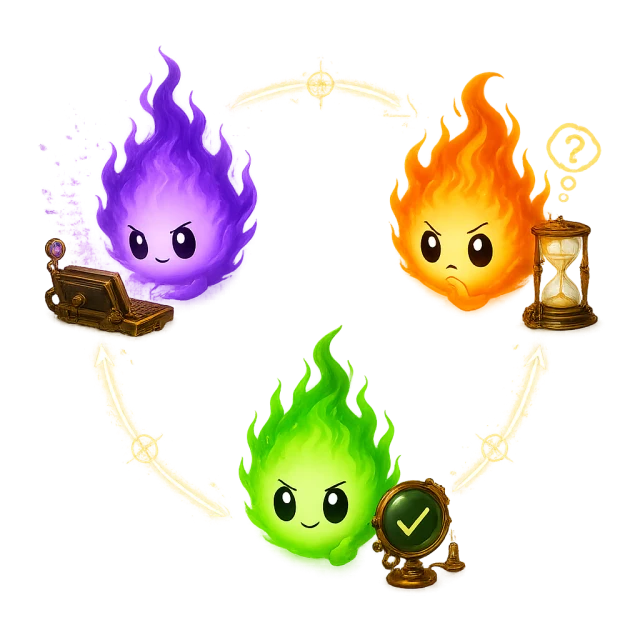

The Light System
Three states. No ambiguity. Each session is a single light whose color tells the truth. For the folklore behind the name, see The Story.
The Three States

Irrlicht's state model is MECE — mutually exclusive, collectively exhaustive. Every session is in exactly one state at any given moment. There is no fourth state, no "unknown", no "cancelled". Three states, three colors, three meanings.
working
The agent is actively processing. This includes text generation, tool calls, shell commands, hooks, compaction, and API retries. The session is busy and does not need your attention.
- Text is being streamed to the terminal
- A tool call is executing (file writes, grep, bash)
- The context window is being compacted
- An API request is in flight or being retried
waiting
A user-blocking tool is open — the agent has stopped and needs your judgment before it can continue. The story pauses until you respond.
Only two tools trigger the waiting state:
AskUserQuestion— the agent is asking you a clarifying questionExitPlanMode— the agent wants to leave plan mode and start executing
ready
The agent is idle at the prompt, waiting for your next instruction. The turn is complete — either the agent finished its work, the process exited, or a task was cancelled. The session is available for new work.
- The agent completed its response and is showing the prompt
- The agent process exited (gracefully or otherwise)
- You cancelled a running task with ESC — the agent is back at the prompt
- The session has been idle beyond the grace period
Decision Tree
The state machine evaluates each transcript update with a simple three-step decision:
-
Is there an open user-blocking tool?
If the last tool result is pending and the tool isAskUserQuestionorExitPlanMode, the state is waiting. -
Is the agent actively processing?
If there are recent transcript events indicating generation, tool execution, or API activity, the state is working. -
Otherwise
The state is ready. The agent is idle and the session is available.
Context Pressure
Context pressure is orthogonal to the three states. It measures how full the agent's context window is and overlays a second dimension onto whatever state the session is in. A session can be working at any pressure level.
| Level | Utilization | Color | Meaning |
|---|---|---|---|
safe |
0 – 60% | green | Plenty of room. No action needed. |
caution |
60 – 80% | yellow | Context is filling up. Be aware. |
warning |
80 – 90% | red | Running low. Consider wrapping up or starting a new session. |
critical |
90%+ | crimson | Auto-compaction imminent. Finish the current task. |
Irrlicht sends a macOS notification at a single configurable context-pressure threshold:
- A threshold you set — a percentage of the context window (default 80%) or an absolute token count, configured under Settings → Notifications. The alert fires once per session and re-arms when you change the setting.
- A token threshold also covers models whose context window size is unknown, where a percentage can never be computed.
critical pressure can still be working, waiting, or ready. The two dimensions are independent.
Cost Estimation
Irrlicht estimates per-session cost by combining model pricing with the token breakdown from each transcript. Input tokens, output tokens, and cache reads are tracked separately and priced according to the model being used (e.g., Opus, Sonnet, Haiku).
- Per-session cost — computed from the cumulative token counts and the model's pricing tiers, displayed in the session detail view
- Per-project aggregation — all sessions belonging to the same project are summed in the UI, giving you a running total for the project's spend
Costs are estimates based on published API pricing. Actual billing may differ due to caching, batching, or pricing changes.
Menu Bar Rendering
Sessions appear in the macOS menu bar as a row of project groups. A group with up to 3 sessions renders one colored dot per session; a group with more than 3 sessions collapses into a single aggregated circle with a session count, colored by whichever state is most active in that group.
| Project groups | Display |
|---|---|
| 0 | A single dimmed grey flame — clean slate, no active sessions |
| 1 – 5 | One group per project, left to right; ≤3-session groups show individual dots, >3-session groups show an aggregated count circle |
| 6+ | The first 5 groups are shown, then an ellipsis (…) — the cap is on project groups, not raw session count |
The menu bar is designed to be glanceable. You should never need to open the dropdown to answer the question "does anything need me right now?" — if you see an orange dot, the answer is yes.